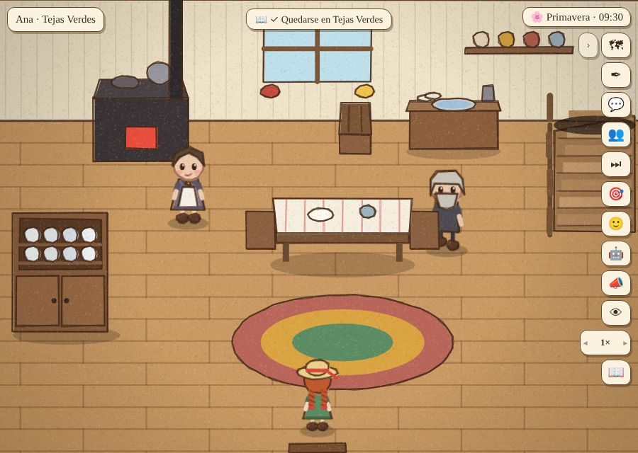
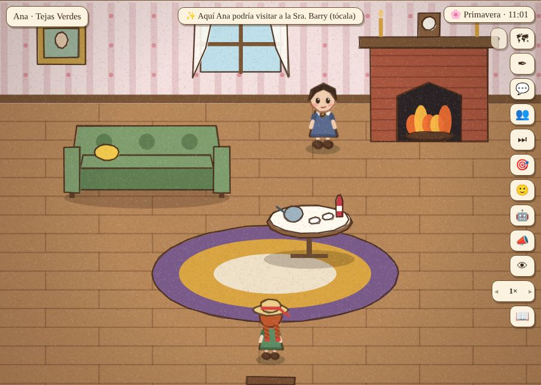
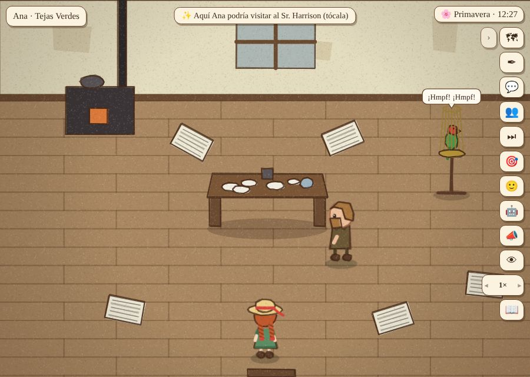
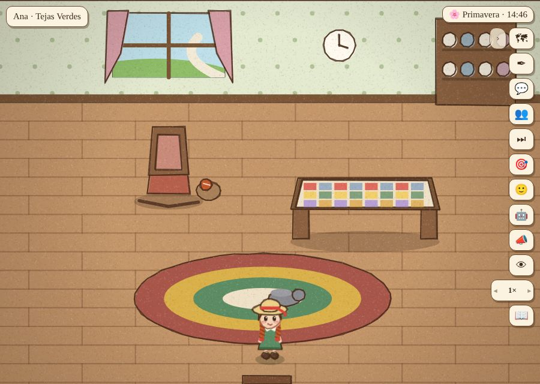
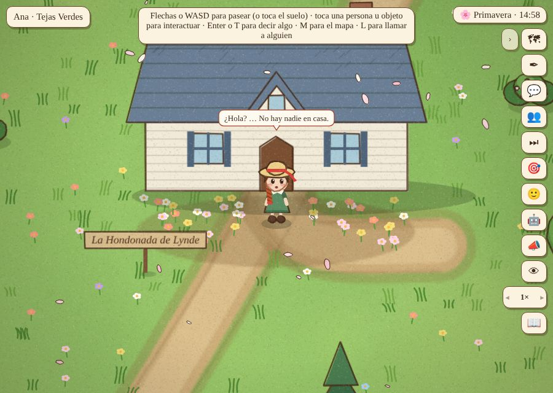
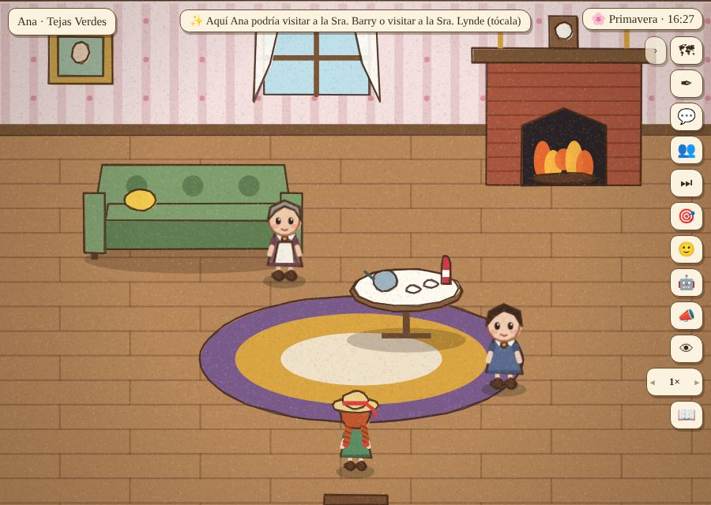
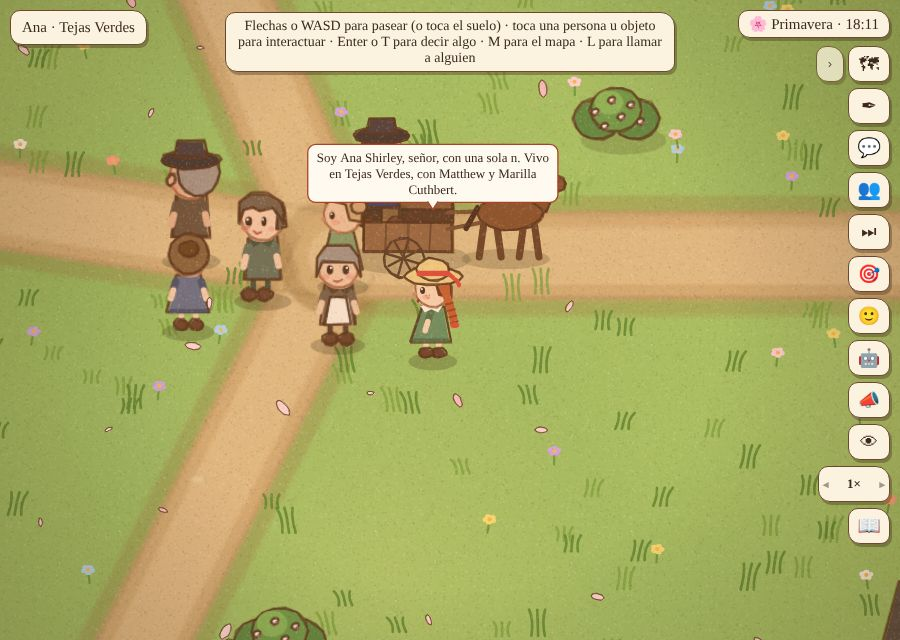

Prueba de usuaria: Ana, vestida, visita a los vecinos que no la conocen
Día 4 (ya se queda; todavía no viene la Sra. Lynde ni vuelve Diana). Solo los Cuthbert, la Sra. Spencer y la Sra. Lynde saben que hay una niña en Tejas Verdes. Jugada con clics, por el mapa. ← Partida 6
Lo que pasó
- La Sra. Barry (La Cuesta del Huerto): «Buenos días. No te había visto nunca por aquí. ¿De quién eres, niña?» — «Soy Ana Shirley, señora, con una sola n…» — «¿Con los Cuthbert? ¡Vaya! No sabía que tenían una niña.» En el camino, la Avenida en flor la distrajo y olvidó adónde iba (es a propósito).
- El Sr. Harrison: se presenta igual, sin saber de ella; Ginger le grita «¡Pelirroja!». Pero en seguida le pregunta «¿Esa vaca tuya se ha portado bien hoy?», como si se conocieran de antes (arreglado: después de unos días de conocerse).
- Marilla la llama a almorzar; Ana va. En la mesa nadie le pregunta dónde andaba.
- La Sra. Lynde no estaba: había ido a tomar el té a casa de la Sra. Barry. Ana entró igual a la casa vacía (arreglado: la casa de un vecino solo se abre si hay alguien de esa casa adentro; si no, «¿Hola? … No hay nadie en casa»).
- En La Cuesta del Huerto, con la Sra. Lynde de visita: Mary Joe empezó a presentarse («¿De quién eres, niña?») y quedó sin respuesta, porque la conversación se cortó cuando Ana siguió caminando (arreglado: una presentación no se corta por la distancia). La Sra. Lynde sí sabía de ella: «¿Así que tú eres la huérfana que trajeron a Tejas Verdes?» y después lo repitió (arreglado).
- En la aldea: una vecina sin nombre le dijo «¡Qué grande estás, niña! Saludos a Marilla.» el día 4 (arreglado: ese saludo, al año; las primeras semanas, «Tú no eres de por aquí, ¿no?»). «¡Vamos a Tienda de Lawson!» → «a la tienda de Lawson». El Sr. Lawson se presentó bien.
Para pensar
- Al almuerzo nadie le pregunta dónde anduvo, aunque visitó a dos vecinos que no conocía. Podría ser una noticia («la niña de los Cuthbert anduvo de casa en casa presentándose») que le llega a Marilla.
Las fotos






